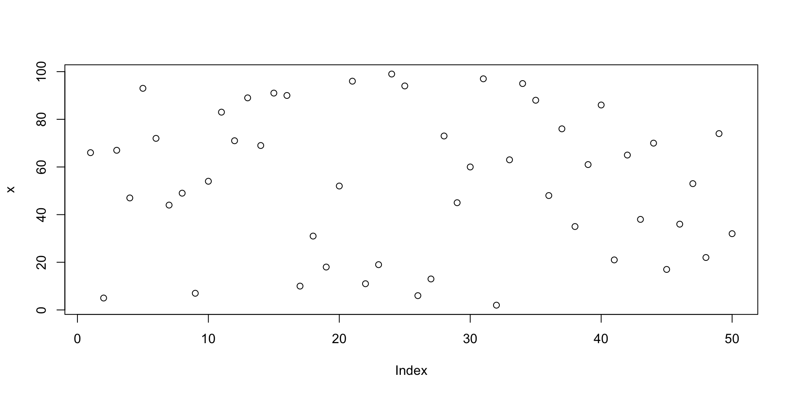

R Markdown for the Humanities
A Practical Intro to Reproducible Writing
Lecturer in Digital Humanities, The University of Manchester
May 28, 2025
Objectives
- Understand what R and RStudio are
- Get familiar with the RStudio interface
- Try some basic R code
- Prepare to work with R Markdown
- Understand the benefits of using R Markdown for research and teaching
- Learn how to make the most of R Markdown by interacting with popular tools in the Humanities (e.g. Zotero)
- Learn how to produce dynamic, reproducible content with R Markdown
it might seem like a steep learning curve, but it will save you a lot of time in the long run!
Step 1: Installing R and R Studio
- R: Download from CRAN
- RStudio: Download from RStudio
- Follow the installation instructions for your operating system (Windows, macOS, Linux)
- As a basic rule, accept all the default options during installation. If asked to choose a version of R, select the latest one.
Alternative
- Use Posit Cloud for a web-based version (no installation needed, only free registration via email)
What is R? What is RStudio?
- R is a programming language for data analysis and visualization.
- RStudio is an IDE — Integrated Development Environment — for using R more easily.
Think of R as the engine, and RStudio as the dashboard.
RStudio: The Interface
| Console | Run code, see results | 2 + 2 |
| Script Editor | Write reusable code | Save as .R or .Rmd |
| Environment / History | View data & past code | x <- c(1,2,3) |
| Files / Plots / Help | Navigate, install, get help | plot(1:10) |
Create your first R Markdown Project
- In RStudio, go to File → New Project.
- Choose New Directory
- Select New Project.
- Choose a location on your computer (e.g., Desktop, Documents).
- Name your project (e.g.,
My_project). - Click Create Project.
no you should see the project name in the top-right corner of RStudio, and a new folder created on your computer. You can now start working on your project! Every file you create in this project will be saved in this folder, making it easier to manage your work.
Install and Load a Package
Try installing a few packages we will need (you will need an internet connection):
- one way to do this is to click on the Packages tab in the bottom-right pane, then click Install and type the package names
- alternatively, you can use the Console to install packages using the
install.packages()function, like this (without the backticks):
install.packages("knitr")
install.packages("tidyverse")
install.packages("tidytext")
install.packages("devtools")
install.packages("bookdown")and then load them using the library() function:
Try This: Console
Ok, let’s try some basic R code in the Console (the bottom-left pane of RStudio). Type the following in the Console and press Enter:
Try This: Script Editor
Open a new R Script (File → New File → R Script) and try writing this (be careful to include the comments and hash symbols #):
- Click Run to execute the line
- Notice how the result appears in the Console
- Save your script as
my_first_script.R
Bonus: View a Plot
# Let's create a simple plot
x <- sample(1:100, 50) # Generate a random sample of 50 numbers from 1 to 100
plot(x)
Or we can make a quick plot of the frequency of words in a text file using the tidytext package. The text is saved in a file called austen_pride_1813.txt in the data folder of your project.
# Let's load a sample text and print the most frequent words
pride <- read.delim("../data/austen_pride_1813.txt", # this reads the file from the url of the chosen file
fileEncoding = "utf-8", # we want to read it as unicode text
header = F) %>% # we do not want the first line as a header
rename(text = V1) # we can name the column text
pride %>% # take the pride data frame
ungroup() %>% # ungroup the data frame
unnest_tokens(word, text) %>% # split the text into words
anti_join(stop_words) %>% # remove common stop words
count(word, sort = TRUE) %>% # count the frequency of each word
top_n(20) %>% # get the top 10 most frequent words
ggplot(aes(x = reorder(word, n), y = n)) + # create a bar plot
geom_col(fill = "#40666e") + # use columns to represent the frequency
coord_flip() + # flip the coordinates to make it horizontal
labs(title = "Most Frequent Words in Pride and Prejudice",
x = "Words",
y = "Frequency") # add labelsSave Your Work
To save your work, you can: 1. Save your .R script to a folder on your computer. 2. Use File → Save or Cmd/Ctrl + S 3. You’ll be working inside a Project soon — easier to manage!
Next Up: R Markdown
We’ll now move into R Markdown, where you can combine narrative, code, and output in a single document — perfect for research and teaching.
Let’s get started!
What is R Markdown?
R Markdown is a tool that combines text, code, and output in a single document. It allows you to create dynamic, reproducible content such as:
- Lecture notes
- Research reports
- Teaching materials
- Articles and dissertations
- Books
Why use R Markdown?
Write once, reuse often / automatically update content when data changes / no more copying-pasting
- Reproducibility: combine code and results
- Transparency: make your work verifiable
- Time-saving: streamline your workflow for both research and teaching
- Flexibility: create various output formats
- Collaboration: share your work easily with others
- Citations: manage references with ease
Typical R Markdown workflow
- Create a new R Markdown document in RStudio
- Write your content using Markdown formatting
- (optional if you work with quantitative data) Insert R code chunks to run analysis
- Knit the document to produce HTML, PDF, or Word outputs
- Update your content easily and efficiently
R Markdown output formats
R Markdown can generate various output formats, including:
- HTML reports
- PDF documents
- Word files
- PowerPoint slides
- Reveal.js presentations
- Books (with bookdown)
- Websites (with blogdown)
The YAML
The YAML header is a key part of R Markdown documents. It contains metadata about the document, such as the title, author, date, and output format. It is written in YAML syntax at the top of the document, enclosed by --- lines.
Markdown syntax
Headings
Use # for top-level headings, ## for second-level headings, and so on.
Text formatting
- Use
*text*or_text_for italic text - Use
**text**or__text__for bold text - Use
~~text~~forstrikethroughtext - Use
>for blockquotes - Use
-or*for bullet lists - Use
1.for numbered lists - Use
[link text](URL)for links - Use
for images
Code chunks:
R Markdown allows you to include R code chunks that can be executed to produce results directly in your document. Code chunks are enclosed in triple backticks with {r} at the beginning.

Dynamic Content
R Markdown allows you to create dynamic content that updates automatically when you change your data or code. For example, you can include the current date:
Citations and References
R Markdown supports citation management through bibliographic files (e.g., .bib files). This allows you to:
- Cite works in your text using keys
- Automatically generate a bibliography at the end of your document
The simplest way to cite a work is to use the @citationkey syntax, where citationkey is the key you assigned to the work in your .bib file. Tools like Zotero or Mendeley can help you manage your bibliography and export it as a .bib file.
Using Zotero for Citations
Better BibTex for Zotero
Better BibTeX is a Zotero plugin that allows you to manage your Zotero references as a .bib file. See Better BibTeX webpage for instructions
using citations in R Markdown
Use @citationkey inline, and remember to add the link to your .bib file in the YAML header of your R Markdown document, like this:
Example citation
Note that at the top of this document, in the YAML there is bibliography: "library.bib". This points to my library file, which contains all the references I want to cite in this document.
- this is the basic citation syntax:
@Moretti2005= Moretti (2005) - also true for multiple works:
@Moretti2005; @Grisot2023= Moretti (2005); Grisot and Herrmann (2023) - with page number:
@Moretti2005[p. 123]= Moretti (2005, 123) - with page range:
@Moretti2005[p. 123-125]= Moretti (2005, 123–25) - in parentheses:
[@Moretti2005]= (Moretti 2005) - multiple works in parenthesis:
[@Moretti2005; @Grisot2023]= (Moretti 2005; Grisot and Herrmann 2023) - work without the author name:
-@Grisot2023 or [-@Grisot2023]= (2023) or (2023)
Reference style
You can choose the reference style in the YAML header of your R Markdown document. For example, to use MLS style, you can:
- download the
modern-language-association.cslfrom the Zotero Style Repository or any other repository of citation styles - save it in your project folder
- and specify it in the YAML header like this:
Templates for Teaching
When it comes to teaching, R Markdown can help you create: - Assignment briefs - Lecture notes - Feedback reports - Dynamic syllabi - Papers and articles - Presentations - Books
And essentially help you save a lot of time when preparing teaching materials.
Challenges and Tips
Formatting issues? Check YAML headers
Long documents? Use bookdown
Collaboration? Use Git or shared RStudio Projects
Reproducibility? Always set a working directory!